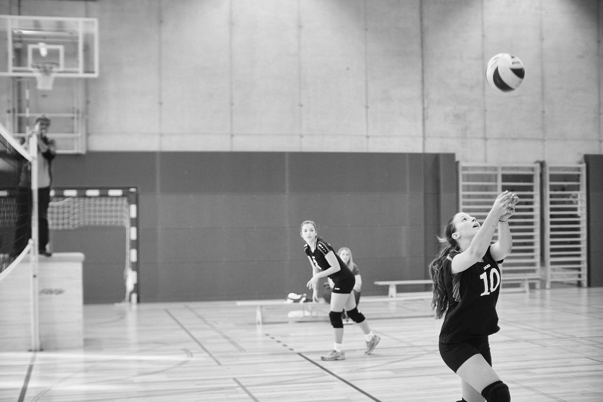
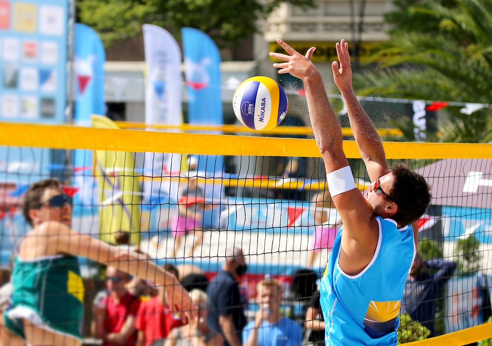

Histórico do voleibol
- 1895: o voleibol é criado nos EUA.
- 1900: o esporte é ensinado no Canadá.
- 1910: o voleibol chega á America do Sul.
- 1915: a primeira partida de voleibol é disputada no Brasil.
- 1964: o voleibol se torna um esporte Olímpico.
William George Morgan, professor e diretor de Educação Física na Associação Cristã de Moços (ACM), idealizou um jogo em que as probabilidades dos participantes se machucarem, em detrimento de contato físico, fossem baixas. Outro fator importante - e pensado nos jogadores mais velhos - era que o esporte não fosse fisicamente tão exigente.
Na época, o basquetebol estava na moda. Havia sido criado 4 anos antes, em 1891, também por um professor de educação física da Associação Cristã dos Moços.

E assim surgiu o vôlei - chamado de "mintonette" - que, graças ao fato de cada uma das equipes ficarem separadas por uma rede, trazia menos chances de lesões.
Além disso, era menos exigente em termos físicos do que o basquetebol - uma vez que os jogadores não precisavam correr ao longo do jogo por toda a quadra. O vôlei, no entanto, era muito completo, pois compreendia uma série de exercícios benéficos para a saúde.

Outros fatores que contribuíram para a invenção do vôlei foram a intenção de Morgan em inovar as suas aulas para cativar mais alunos. Além disso, o fato de o vôlei poder ser praticado no inverno rigoroso dos Estados Unidos, já que era disputado em quadra fechada.
O próximo desafio foi a bola usada no jogo. Utilizando primeiramente apenas a câmara de ar da bola de basquete, Morgan tentou deixar a bola menor e mais leve. Mas isso não era suficiente, e Morgan solicitou à firma A.G. Spalding & Bros. a criação de uma bola específica, de modo que após várias tentativas conseguiram obter uma bola com o tamanho e peso ideais para a prática do voleibol.